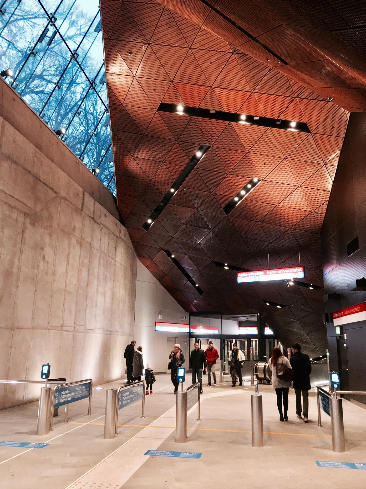

20171119 日記
今天跟同學打羽球回來，終於打到羽毛球了。我原本以為芬蘭沒甚麽人打，畢竟國際賽事來看，羽球還是個相對亞洲的運動，沒想到芬蘭同學說其實還是頗受歡迎的，於是就來揪揪看。今天有韓國人、台灣人、比利時跟斯洛伐克同學。覺得球場上好多以前習慣的俗語都不知道英文該怎麼講，但至少身體還是會說話吧。
現在的頭髮好醜...。
週末都在苦命地念書、趕一份作品集，然後還有開會。大前天系辦寄信來，大意是瑞典IKEA徵詢七間在歐洲的學校選送實習生名單給他們，每個學校的額度有五個人，最後七間共會錄取三個人，也就是說，如果獲得學校推薦，錄取率是 3/35。有薪實習，月薪七萬左右，並不算多，但總會是有趣的經驗吧。於是準備簡單的作品集試試看能不能闖過學校推薦這關。雖然，寫信問系秘書這樣會不會影響到獎學金的受獎資格，而未及收到回應。
我的高中時代，學校對面就有一家 IKEA，那是我在苦悶的高中生活中，慢慢產生對設計興趣的一個重要的催化劑。如果能去看看，有種夢想成真的感動感。
今天也第一次嘗試新的捷運，就蓋在新設計學院建築群裡頭，光看捷運的樣子就可以預期設計學院的部分也會會很棒。好期待落成。以下捷運部分的日記：
新捷運的入口，在赫爾辛基常見的的芬蘭現代主義粗獷風格。
「It has been 3 months since I moved to Helsinki. However, sometimes I still act like a tourist…
Helsinki’s western metro opened several days ago. It significantly reduces the traveling time from Otaniemi to the city center. It would take me for 30-40 mins by bus but now only 12 mins by metro! Although it should have opened 4 years ago, I’m still satisfied. 😛
My first 3-month public transportation experience in Helsinki is much better than I originally imagined. It’s partly because the terrible public transportation in London and Paris gave me a negative impression on the public transportation in EU while I was traveling last year. It may because the Finnish public transportations such as the metro is comparably newer than the other countries.
Basically, the state-owned transportation companies in Helsinki successfully operate and maintain the complex system and services. The trams, the metro and the trains are almost always on time and come pretty often even it’s 3 AM. The stations as well as the overall spaces of the public transportation here are generally clean and safe. I do usually feel safe and even sometimes dozed off on the tram and bus, whereas there appears to be always a thief on the metro in Milan - I once saw some guy stole and ran away there. In addtion, the way-finding system here is also well-planned and easy-to-follow for a foreigner like me.
The interior design of the stations seem to be kind of Finnish modern style. They made a good use of fair-faced concrete, granite (the bedrock in Helsinki area is rich in term of it), copper, and stainless steel to form a kind of elegant brutalist style. It’s new to me because the metro in Taipei is more likely to design with kinda high-tech style. In Taipei, it seems to be difficult to maintain a public building in brutalist style regarding to the humid weather. However, I would say the metro in Taipei is the cleanest, the safest and the most convenient one I have ever seen in the world (but with some strict regulations tho). 😎
BTW, according to Wikipedia, the farebox recovery ratios of HSL metro was approx. 49% last year , whereas the counterpart of taipei metro was around 100%. The lower density of population here makes the public transportation in Helsinki doomed to be a non-profitable public investment.
中文摘要：赫爾辛基的捷運西線通車了，離我住處最近的捷運站剛好在將蓋好的新設計學院建築裡頭。以後不用再冷風中等半天公車到學校（舊設計學院校區）
啦。相較其他堪稱悲劇的西歐國家公共運輸，芬蘭的品質以台灣的標準來看，還是很不錯的。赫爾辛基的公共運輸基本上是由交通局督導，而以國營公司的方式經營。附註一下，赫爾辛基捷運的票箱成本回收比例是49%，台北市剛好在100%上下，亦即光靠票箱即可勉強完全自償。不過儘管人口相對稀疏很多，赫爾辛基的公共運輸系統仍然非常完善，雖然我懶得查財報，但感覺這邊政府看起來就是把它當公共投資在弄。」
最後略敘一下本週念的兩個東西好了。一個是 Design Research，一直在唸審議式民主相關的文獻看有沒辦法抓到精準的切入點，但看了各種文獻總覺得跟台灣經驗格格不入。例如這篇，兩個主要作者都是重量級大咖：
Fung, A., & Wright, E. O. (2001). Deepening democracy: innovations in empowered participatory governance. Politics & Society, 29(1), 5-41.
- representative democracy plus techno-bureaucratic administration—seem increasingly ill suited to the novel problems we face in the twenty-first century.
- “Democracy” as a way of organizing the state has come to be narrowly identified with territorially based competitive elections of political leadership for legislative and executive offices
- increasingly, this mechanism of political representation seems ineffective in accomplishing the central ideals of democratic politics: facilitating active political involvement of the citizenry, forging political consensus through dialogue, devising and implementing public policies that ground a productive economy and healthy society, and, in more radical egalitarian versions of the democratic ideal, ensuring that all citizens benefit from the nation’s wealth.
- Deregulation, privatization, reduction of social services, and curtailments of state spending have been the watchwords, rather than participation, greater responsiveness, and more creative and effective forms of democratic state intervention.
- But perhaps the problem has more to do with the specific design of our institutions than with the tasks they face as such. If so, then a fundamental challenge for the Left is to develop transformative democratic strategies that can advance our traditional values—egalitarian social justice, individual liberty combined with popular control over collective decisions, community and solidarity, and the flourishing of individuals in ways that enable them to realize their potentials.
大意是自由民主與投票為民主實踐的體制搭配政府行政失靈，導致右派崛起，身為超級左左的作者意欲以審議民主作為出路，去解決既有問題而非縮減政府職能。但顯然台灣的問題意識與此不同，台灣問題在國家統合主義遺緒下衍生的裙帶資本主義，因此某種程度來說，縮小既有政府的職權是有好處的，而這個好處跟歐美右派的認知是不同的。另外，審議民主與政府是否為自由民主政體並無絕對關係（Dryzek，2009），如何把審議民主的潛在好處與對現行民主體制的支持扣連起來，會是台灣的課題。
另外一門課是產品建築設計，就是最近搞得我死去活來的遊輪航程設計的那門課。期末要用建築設計的概念分析既有產品，自由發揮。這邊建築（Architecture）的概念跟中文蓋屋造家的建築是不同的，而更像是從系統設計去分析產品包含了哪些物質與非物質的元件，他們是如何被動態的整合在一起，除了tangible的結構外，也要關照相關行動者間的關係甚或制度。
我應該會挑政府的官方統計作為一個產品，目前考慮拿芬蘭、台灣、中國、美國來做比較，但最近太忙了可能得到11/25之後才有空去做基本的資料收集。
以上。